Progression Guidebook
SkyBlock progression from level 0 to endgame. Skills, gear, weapons, and ways to make coins at each stage.
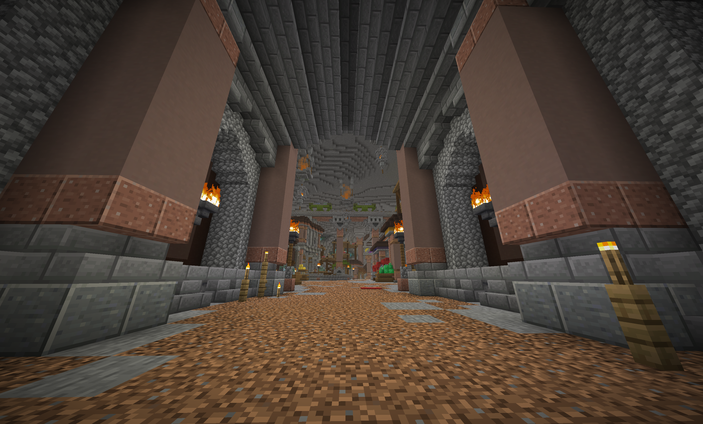
Movement & First Items
Rogue Sword is free from the Weaponsmith in Combat Settlement — right-click gives a speed boost. Grab a Grappling Hook from the AH early. Your main early target is Aspect of the End (AotE), which teleports you forward on right-click and stays useful well into midgame.
Skill Priorities
Get Mining, Farming and Foraging to 5 each — that unlocks the Bazaar at SkyBlock Level 7. Combat 12 opens The End. Mining 12 opens Dwarven Mines and the HotM tree. Do your 4 daily Commissions in Dwarven Mines for bonus HotM XP on top of the regular grind.
Armor Progression
Iron or Gold to start. Craft Farm Suit at Wheat Collection III. Hardened Diamond at Diamond Collection IV is your first real upgrade worth investing in. Then Ender Armor for The End — it gives a 2x stat multiplier there. Aim for Strong or Unstable Dragon before entering Dungeons. Zombie Knight Armor from the Bazaar is cheap and holds up fine in F1–F3.
Weapons
Rogue Sword (free NPC) → Cleaver → Aspect of the End → Aspect of the Dragons (AotD). AotD is crafted from Dragon Fragments and carries you through most of early and mid game. Main enchants to put on it: Sharpness V, Critical V, First Strike IV, Giant Killer V, Lethality V.
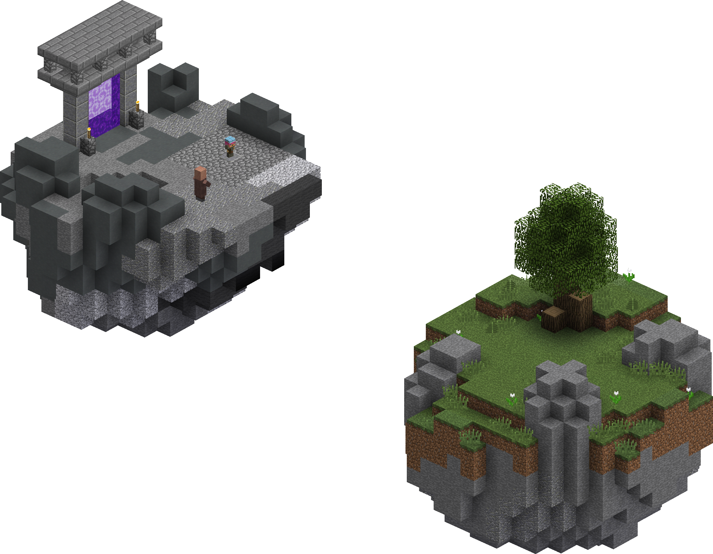
Minions
Craft one of every minion type to unlock more island slots — up to 30 total. Redstone Minion T1 unlocks the Accessory Bag at Redstone Collection II, so get this early. Snow Minions T11 with Super Compactor 3000 + Diamond Spreading + Enchanted Lava Bucket run completely passively and earn 65k–125k coins each per day.
Early Quests & NPCs
The Park has a quick quest chain worth doing: bring logs to Charlie (64 Birch), Kelly (128 Spruce), Molbert (512 Jungle), then Melody (1024 Savanna) for Foraging gear. Melody drops her Hair accessory if you perfect the harp. Lazy Miner near the Gold Mine rewards Auto Smelt. The Bartender in the Graveyard Pub is easy early Combat XP.
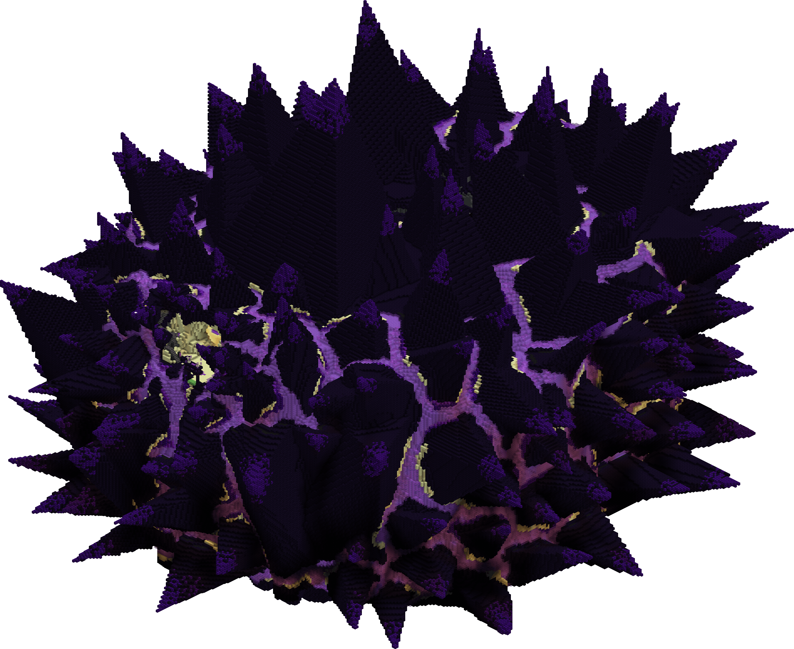
The End & First Dungeons
Combat 12 unlocks The End. Buy a Void Sword (~200k) and grind Endermen — Zealots drop Summoning Eyes and Eye of Ender that sell well. For Dungeons, talk to the Catacombs Guide NPC to unlock them. Aim for at least 300 Defense before F1. Grab Bonzo's Mask from F1 — it saves you from one death passively.
Accessories & Magic Power
Accessory Bag unlocks at Redstone Collection II. Good early ones to grab: Speed, Vaccine, Talisman of Coins, Talisman of Magnetism, Campfire Badge (Trial of Fire in The Park). Every accessory adds to your Magical Power — aim for 100–200 MP early on. Always bank your coins before anything risky.
Pets & Passive Systems
Grandma Wolf gives you a free pet right at the start — equip it immediately for passive leveling. Uncommon Tiger (~25k) is the best early Combat pet; Rabbit for Farming XP. The Chocolate Factory (/cf) is free, check it daily and hire workers to stack Chocolate for rewards. Booster Cookie early gives 4 days of coin-on-death protection and remote Bazaar access.
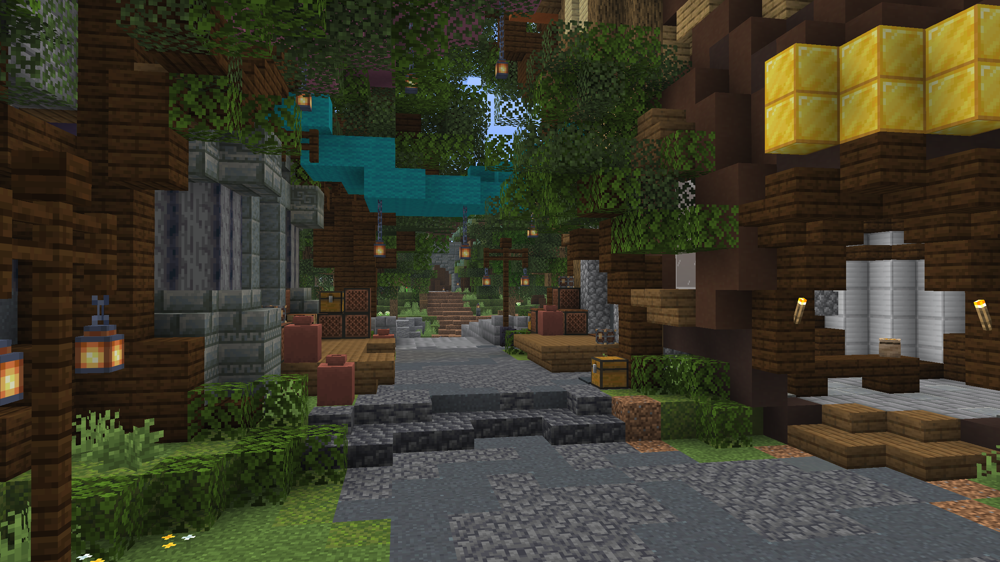
Making Your First Millions
Use Bazaar buy/sell orders for everything — NPC prices are almost never worth it if the item's on the Bazaar. Snow and Clay Minions are passive income from day one. For active grinding, Zealot farming in The End with AotD and Mithril mining in Dwarven Mines both pay well. Get to 100% Crit Chance before stacking Crit Damage. Around 500k–2M per hour once you have a setup going.
F3–F6 Armor Path
Berserker: Strong/Unstable Dragon → Shadow Assassin (F5–F6) → Necron. Mage: Wise Dragon → Storm's Armor (F6 drop) — Dark Goggles are mandatory in the helmet slot. Necromancer Lord Armor is a solid budget Mage option before Storm's. Shadow Assassin chest + Zombie Knight Chestplate works as cheaper Defense coverage.
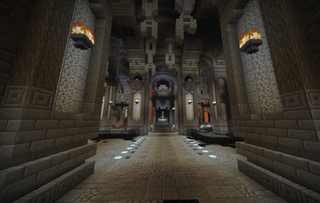
Dungeon Floor Guide
F3: ~350 Defense. F4: ~400 — Bonzo Mask no longer trivializes deaths. F5: ~550, Livid Dagger is the key drop here, get it Fabled and Recombobulated. F6: drops Shadow Assassin pieces and Storm's Armor. F7: ~700 Defense, Cata 28+ recommended — Necron's Handle drops here and you'll need it for Hyperion later.
Midgame Weapons
Berserker: AotD → Livid Dagger (Fabled + Recombobulated) → Axe of the Shredded. Mage: Bonzo's Staff → Spirit Sceptre → Midas Staff. Archer: Juju Shortbow (10–20M) → work toward Terminator. Spirit Sceptre is genuinely strong for Mages pushing F5–F6.
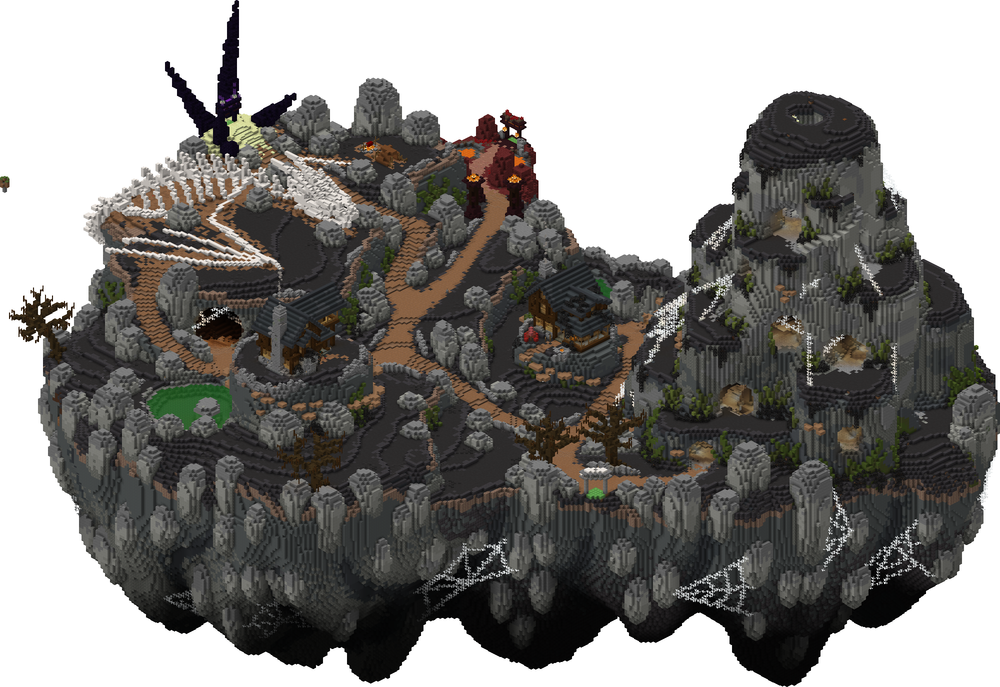
Slayer Order
There are 6 slayers: Zombie, Spider, Wolf, Enderman, Blaze, Vampire. Start with Zombie (Revenant Horror) — it drops Wand of Healing which is huge QoL. Spider gives Tarantula Armor. Wolf T4 unlocks Enderman. Enderman T3 fills the RNG Meter for guaranteed drops. Blaze needs Voidgloom T3 to unlock. Vampire is in the Rift.
Minion Setup
Aim for 20+ slots all running Snow Minions T11. Each needs Super Compactor 3000 + Diamond Spreading + Enchanted Lava Bucket — completely passive once set up. Upgrade tier by tier, never skip. Clay Minions T11 are also good for Fishing XP alongside the coins. Craft one of every minion you haven't done yet to gain collections and unlock more slots.
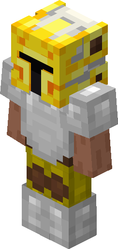
Jacob's Farming Contest
Contests run every SkyBlock day (1 real hour) and last 20 minutes across 3 random crops. Bronze is top 50%, Silver top 25%, Gold top 5%. Gold medals give 25 Jacob's Tickets each — spend these on Turbo-Crop enchant books for Farming Fortune. Unlock the Garden at 100 unique crop collections.
Upgrading Your Accessories
Each accessory upgrades from Talisman to Relic — only the highest tier you own counts. Worth getting midgame: Feather Artifact, Intimidation Artifact, Zombie and Wolf lines, Scarf's Studies. Target 200–400 Magical Power. Maxwell's Power system replaces the old per-accessory reforging — pick a Power that fits your class and upgrade it with MP.
Scaling Your Coin Flow
Good sources at this stage: F4–F6 drops like Shadow Assassin pieces and Livid Daggers sell well on the AH. Slayer drops on the Bazaar are solid. Powdersludge Mining with HotM 7+ can hit 10–20M per hour. Bazaar flipping still scales well — reinvest everything. Around 2M–5M per hour consistently in midgame.
Equipment Slots
The 4 equipment slots (Necklace, Cloak, Belt, Gloves) are separate from your armor. For Dungeons: Bone Necklace, SA Cloak, Adaptive Belt, Soul Weaver Gloves — all fragged. For Kuudra and Slayer outside dungeons: Rift Necklace, David Cloak, Implosion Belt, Gauntlet of Contagion. Aim for MP4–5 or MR4–5 attribute rolls on Kuudra pieces.
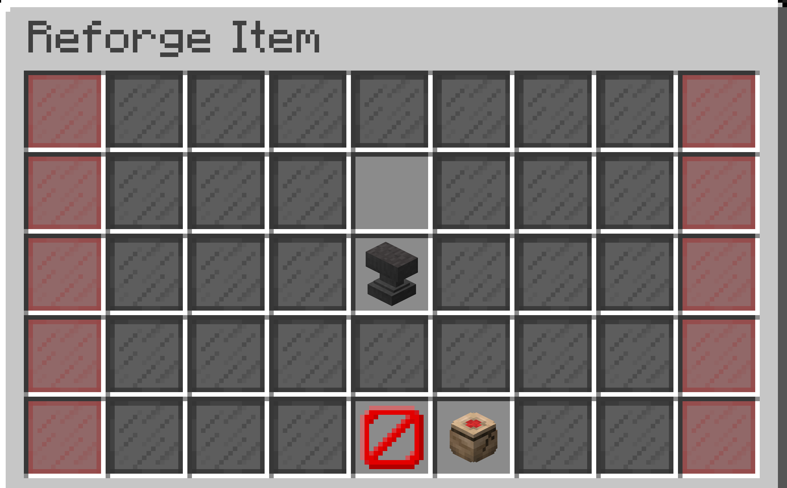
Reforging
Berserker wants Withered or Fabled on weapon and armor. Mage wants Wise or Magical. Archer wants Ancient. Tank wants Reinforced. Reforge your weapon first — it makes the biggest single difference. Reforge Stones come from Dungeons, Slayer drops, and the Bazaar. Basic reforges cost coins at the Blacksmith; advanced ones need Reforge Stones at the Reforge Anvil.
The Hyperion Journey
Farm Necron's Handle from F7. Combine with 24 Wither Catalysts to craft Necron's Blade (Unrefined), then add 8 L.A.S.R.'s Eyes to complete Hyperion. Apply all 3 Blade Scrolls at the Anvil to unlock Wither Impact — they drop from Giants in the Blood Room. Other Wither Blades worth knowing: Scylla, Astraea, Valkyrie.
Slayer Grind
Push all Slayers to level 7+. Enderman drops Etherwarp Conduit (big mobility upgrade) and Ender Artifact. Blaze drops Mana Disintegrator and Gauntlet of Contagion, both important for Mage. Vampire Slayer in the Rift unlocks Bloodfiend Armor. Each slayer's RNG Meter at T3+ guarantees drops — always fill it before killing the boss.
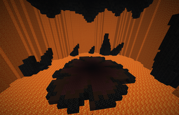
Kuudra Progression
Five tiers: Basic through Infernal. Infernal needs 12,000 Crimson Isle reputation to unlock. At T3 (Burning) you want Midas Staff + Storm for clearing, Spiked Terror, and mana regen armor. T5 (Infernal) needs Fiery Terror LL7+, Terminator Duplex 5, and Ember Armor for crate farming. Standard T5 equipment: Molten Necklace, Molten Cloak, Implosion Belt, Glowstone Gauntlet.
Hitting 1000 Magic Power
Get above 1000 Magical Power at this stage. Hegemony Artifact doubles its own MP contribution — it's mandatory, get it first. Scarf's Studies and Thesis are affordable high-MP accessories for dungeon builds. Rift Prism adds +11 MP when imbued at Erihann in the Rift. More MP means stronger Power bonuses and more Tuning Points at Maxwell to put into specific stats.
Pets (Late Game)
Golden Dragon (Legendary) at level 200 is the best general pet and worth prioritizing. Spirit Pet is a rare Dungeon drop and highly sought after. Parrot buffs all active potion effects, solid for any potion-heavy build. Baby Yeti from midgame carries over well for survivability. Always match your active pet to what you're doing.
Late Income Sources
F7 and Kuudra T4–T5 are the main earners here — Crimson Armor pieces and Molten Equipment go for hundreds of millions on the AH. Pest Farming in the Garden at Farming 40+ is reliable passive income. Crystal Hollows + Powdersludge Mining with HotM 7+ can hit 10–20M per hour. Around 5M–10M per hour consistently at this stage.
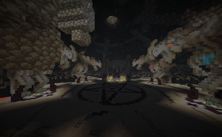
Master Mode Requirements
MM mobs have dramatically higher HP and damage. Rough Cata level requirements: M1 ~27, M3 ~31–32, M4 ~36, M5 ~38–40, M6 ~41–44, M7 45+. A good rule of thumb: have Master Stars on your armor equal to the floor you're running. Magical Power above 1000 from M4 onward. Terminator is required from M5 — Juju won't cut it.
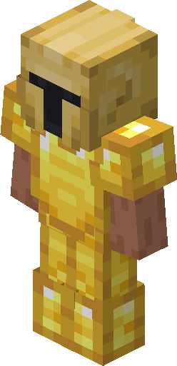
Master Mode Armor & Setup
Best-in-slot for M7: Divan's Head, Skeleton Master Chestplate, Necron's Leggings, Maxor's Boots. All gear scales with Catacombs level inside dungeons. Apply perfect gemstones before adding Master Stars. Wax all equipment pieces before starring them — order matters.
Weapons Meta (2026)
Hyperion is still the best general weapon — nothing has replaced it in 2026. Terminator is required for M5+ runs; use the Precise enchant. For melee Wither Blades: Scylla for Berserker, Astraea for Tank, Valkyrie if you want something more balanced. Shadow Fury is a cheaper melee option. Fabled Livid Dagger still has a few niche use cases.
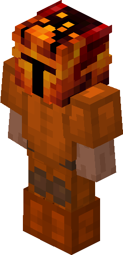
Crimson Armor
Best out-of-dungeon melee armor set at Infernal Tier + 15 Stars. Melee hits build up to 10 stacking buffs that boost your stats each hit. Full upgrade cost runs around 1.79M Crimson Essence, 172 Heavy Pearls, 160 Kuudra Teeth, and ~102M in materials. Attribute rolls matter a lot — the right combination can double or triple a piece's value on the AH.
Maxed Magical Power
Cap is 2007 base MP, or 2247 in dungeons with all Dungeon Accessories. Hegemony Artifact doubles its own contribution — mandatory. Rift Prism adds +11 MP when imbued at Erihann. Higher MP unlocks stronger Powers at Maxwell and more Tuning Points to allocate. Getting to 2007 means owning every unique accessory at max rarity.
Infernal Kuudra
You need Terminator with Duplex 5, Fiery Terror LL7+, Ember Armor for crates, and Hyperion at 1100+ mana for the mage role. Coordinated 4-person teams are the standard — solo is possible but slow. Each run drops 3 Demon Shards plus the full Crimson loot table, with a chance at Crimson Armor, Molten Equipment, Tormentor, Hellstorm Wand, and Ananke Feathers (0.35%).
Net Worth Milestones
Rough brackets: under 50M is early game, 50M–500M midgame, 500M–5B late, 5B–30B endgame, 30B+ is top player territory. 1B is realistic within a year if you play consistently. Track your profile at soopy.dev/networth or skytools.app. At endgame you can expect 10M–20M+ per hour from M7 or Infernal Kuudra.